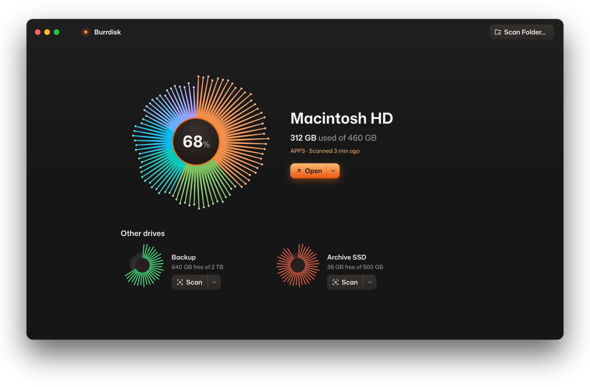
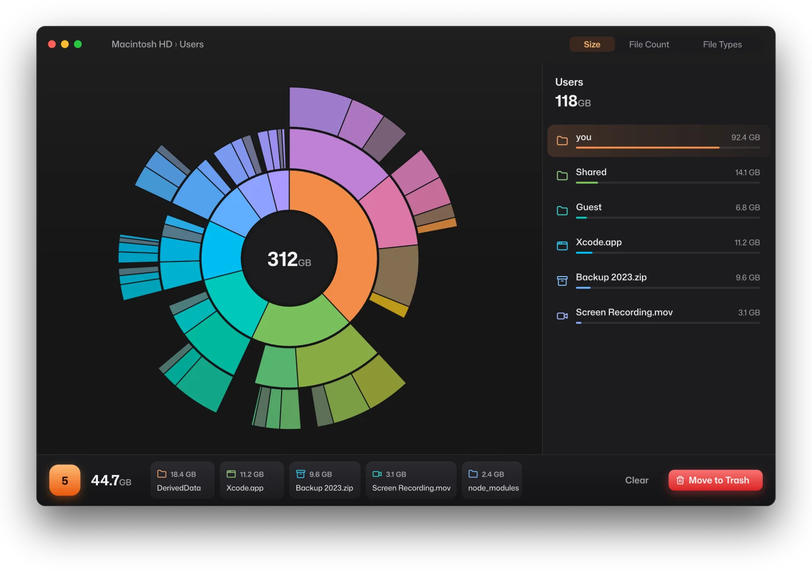

Your disk is almost full.
432 GB used of 460 GB
Dig right in. Free up your disk.
Burrdisk shows you exactly what is filling your Mac or PC. Pick what you don't need, and move it all to the Trash in one go.
Free and open source, for macOS and Windows.
How it works
-
Scan, and the spines become your folders.
Every disk is drawn as a burr. Before a scan, its spines show how full it is. After one, they grow into the disk's biggest folders, so you can tell your drives apart at a glance.
-
Every folder is a ring.
The scan opens as a sunburst. Each ring is one level deeper, and each slice is as big as the space it takes. The biggest thing on screen is always orange.
-
Click a ring to dig in.
Open a folder by clicking its slice, and go back with the center. The sidebar lists everything in the folder you're in, largest first, in the same colors.
-
Collect what you don't need.
Drag files and folders into the Collector, or right-click and pick Move to Collector. Old build caches, a forgotten backup, last year's screen recordings: they pile up in one place, out of the chart.
-
Review the pile, then clean it in one go.
Move to Trash starts a five-second countdown, and Stop or Esc cancels it. Everything goes to the Trash, or the Recycle Bin on Windows. Nothing is ever deleted for good, so you can always put it back.
A native app that opens instantly.
Burrdisk is written in Rust and drawn on your graphics card with GPUI, the framework behind the Zed editor. It stays smooth on disks with millions of files, and it scans folders in parallel.
It looks the same on macOS and Windows, set in its own typeface, and it updates itself from GitHub when a new version is out. Nothing downloads until you click Update.


Numbers you can trust.
- Sizes match what's really used
- Burrdisk counts the space each file actually takes up on your disk. Compressed files aren't overcounted, and a file that appears in two places through a hard link only counts once.
- It tells you what it can't see
- Some of your startup disk is off-limits to every app, like system snapshots and protected files. Instead of leaving a gap, Burrdisk shows that space as its own slice, called Hidden space.
- Faster as administrator on Windows
- Rescan as Administrator reads an NTFS drive's file table directly. It's several times faster and counts System Volume Information too.
- Nothing leaves your computer
- No accounts, no analytics, no telemetry. The only thing Burrdisk asks the internet is whether there's a new version.
33.5 GB back.
398 GB used of 460 GB
Your turn to dig.
Free for macOS on Apple silicon and for 64-bit Windows. Open source under the MIT License.
Burrdisk isn't notarized or code signed yet. The first time on macOS, right-click the app and pick Open. On Windows, if SmartScreen warns you, click More info, then Run anyway.